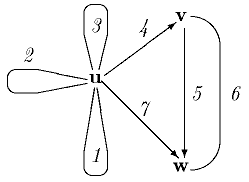
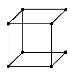

Estu u, v∈V kaj e∈E; se veras P(u,e,v), tiam la verticoj u kaj v estas najbaraj; la eĝo e estas incida al v (iras al v) kaj u (iras el u); tial la predikaton P oni nomas incidpredikato. Ĉiu eĝo e apartenas al unu el la tri specoj:

La grafeo

klarigas la ideon motivantan la terminojn «vertico» kaj «eĝo»;
verdire, la pluredroj estas tre speciala okazo de grafeoj. Fakte la nocio
«grafeo» ne estas apartenaĵo de la «kontinua matematiko»; la formala
difino uzas nur tre ĝeneralajn nociojn de la arteorio (kp grafikaĵo), kaj krom la geometriajn oni
ankaŭ uzas tute diskretajn prezentojn —
ekz-e per incidmatrico. En tiu prezento la rilaton inter vertico
vi kaj eĝo ej esprimas la elemento
de matrico M[i,j] laŭ unu el la sekvaj okazoj:
| 1 | 2 | 3 | 4 | 5 | 6 | 7 | |
|---|---|---|---|---|---|---|---|
| u | M | M | M | D | 0 | 0 | D |
| v | 0 | 0 | 0 | A | D | S | 0 |
| w | 0 | 0 | 0 | 0 | A | S | A |
Estu R libera duonringo kun la generantaro
{0,A,D,M,S}
kaj MTestu la transponaĵo de M. Tiam la kvadrata matrico B=M⋅MT super R estas la vertica najbarmatrico, dum H=MT⋅M estas la eĝa najbarmatrico. Tiu dua estas uzata multe pli malofte ol la unua, tial per senadjektiva «najbarmatrico» oni kutime nomas la vertican najbarmatricon.
En la praktiko grafeoj ofte estas prezentataj per listoj aŭ ligillistoj (Interna prezento de grafeoj); ankaŭ vd duuma arbo.
La dirita ne signifas, ke la grafea problemaro ne estas rilatigebla al geometrio; ekz-e, oni povus konsideri problemon tre interesan por la praktiko: ĉu donita grafeo desegneblas tiel, ke la linipecoj prezentantaj diversajn eĝojn ne interkruciĝas — t.e. ĉu la grafeo estas ebena grafeo; ekz-e la grafeo estas ebena, dum
![[Neebena grafeo]](BILDOJ/neebena.gif) estas neebena.
estas neebena.
Grafeo estas n-obleĝa, aŭ n-grafeo, se neniajn du ĝiajn verticojn ligas pli ol n eĝoj, t.e. por ĉiuj u,v∈V veras
|{e∈E: P(u,e,v)∨P(v,e,u)}| ≤ n.
Por la direktaj grafeoj oni nombras nur la samdirektajn eĝojn:
|{e∈E: P(u,e,v)}| ≤ n.
Speciale menciindas nulgrafeo (aŭ 0-grafeo, vakua grafeo), unugrafeo kaj plurgrafeo (n-grafeo kiu ne estas 1-grafeo, n>1; ekz-e ). Kutime oni identigas izomorfajn grafeojn.
Rim. Iuj aŭtoroj simpligas la difinon de grafeo,
reduktante grafeon al duloka rilato (t.e. difinas eĝon kiel
verticduopon); tio malebligas la plurgrafeojn, kiuj ja estas uzataj por
priskribi aŭtomatojn, gramatikojn (vd sintaksa diagramo) ktp; la problemo pri la
Konigsbergaj pontoj, de kiu komenciĝis grafeiko, kondukas al 2-grafeo (vd La Konigsbergaj pontoj). Kp arbo, hamako, kompleta grafeo, koneksa grafeo, reto, subgrafeo, supergrafeo, vojo.